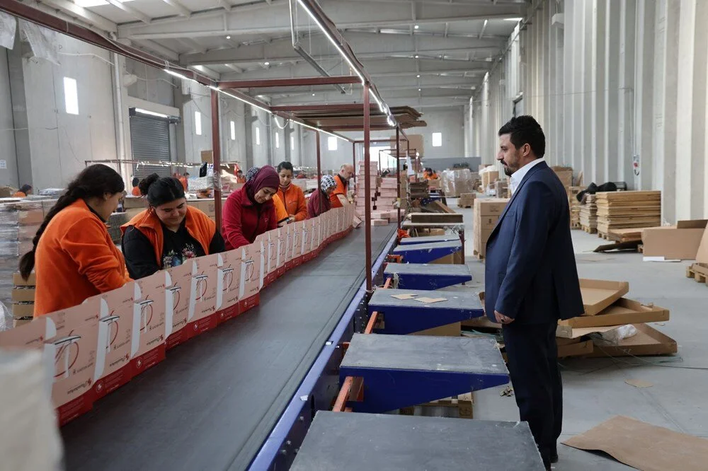

1-10 soruda emlakta ilan doğrulama: Zorunlu hale geliyor
Açıklama:Emlakta doğrulanmış ilan dönemi 1 Ocak 2025 itibarıyla zorunlu hale gelecek. Uygulamanın tamamen zorunlu hale gelmesiyle portallarda yayında olan emlak ilanları yayında kalmaya devam edecek. İşte emlakta ilan doğrulama ile ilgili merak edilenler...
2-Asgari ücret zammı 2025 senaryoları: Asgari ücret zammı ne kadar, yüzde kaç olacak?
Açıklama:Milyonlarca asgari ücretli çalışan, 2025 asgari ücret zammının ne kadar olacağını merak ediyor. Yeni yılın ocak ayında geçerli olacak olan asgari ücret zammı öncesinde, zam ihtimalleri araştırılmaya başladı. İşçi, işveren ve hükümet kesiminin yer alacağı Asgari Ücret Tespit Komisyonu'nun ilk toplantısı bugün yapılacak. Geçtiğimiz yıl asgari ücret hükümet tarafından yüzde 49,11 oranında zamlanmıştı. Peki, yeni asgari ücret zammı ne kadar olacak? 2025 asgari ücret ne kadar olur? İşte asgari ücret zammı için senaryolar.
3- Eşinin 1 adet bileziğini bozdurup fabrika sahibi oldu: Şimdi 750 personeli var
Açıklama:Eskişehir'de eşinin 1 adet bileziğini bozdurarak kurduğu firmasıyla bugün yaklaşık 750 kişiye istihdam sağlayan Mehmet Ali Çil, “Çalışanlarımızın yaklaşık 650'si kadın. Bizim en büyük gücümüzü kadınlar oluşturdu” dedi.
